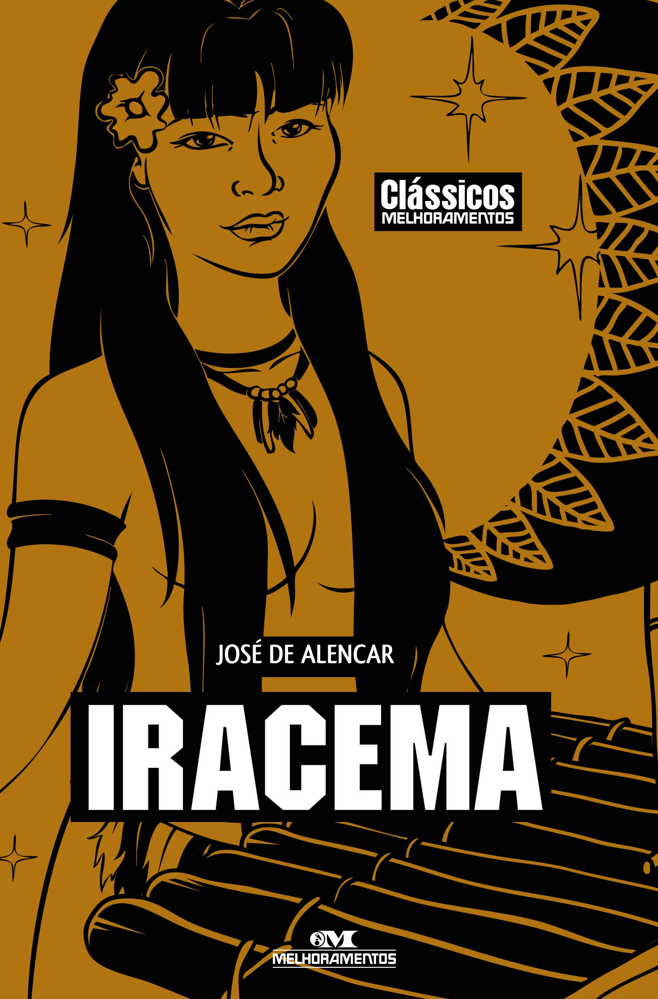

Iracema

INFORMAÇÕES BÁSICAS
RESUMO DA OBRA
CONTEXTO

O Romantismo é um movimento literário que surgiu no final do século XVIII e se estendeu pelo século XIX, caracterizado pela valorização da emoção, da imaginação e da individualidade. No Brasil, o Romantismo teve um papel importante na construção da identidade nacional, explorando temas como a natureza, o indígena, o passado histórico e a exaltação do amor. A linguagem é marcada pela subjetividade, pelo uso de figuras de linguagem e por uma estética que busca o belo e o sublime.